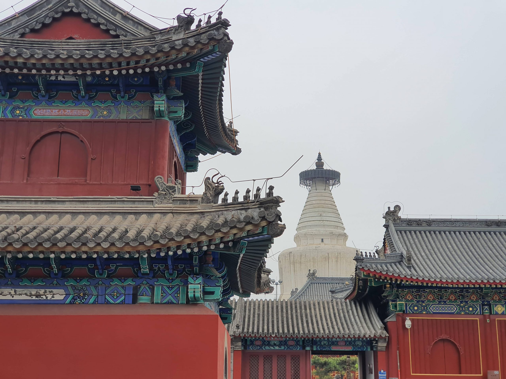

Temple Silence 庙宇的静默
Inside the Lama Temple, incense swirls upward like quiet thought. Gold roofs glint through winter haze. The city’s hum fades at the gate — replaced by the soft shuffle of feet on stone. Bells mark time not as hours, but as breaths.